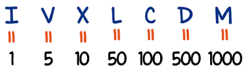

<div class="container">
    <div class="abs-center">

        <h1 class="text-center p-3 mb-2 bg-primary text-white">Pasar de números naturales a romanos</h1>

        <p>Digite un número natural del 1 al 1000</p>
        <form class="form-inline">
            <div class="form-group mb-2">
                <input type="number" class="form-control" placeholder="Número Natural" (keyup)="convertir(numeroNatural.value)" #numeroNatural>
            </div>
            <div class="form-group mx-sm-3 mb-2">
                <input type="text" class="form-control" disabled=true placeholder="Número Romano" [(ngModel)]="numeroRomano" name="numeroRomano">
            </div>
        </form>
        
    </div>
</div>